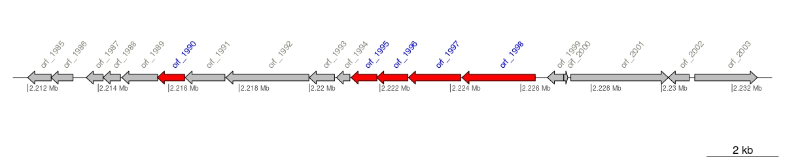
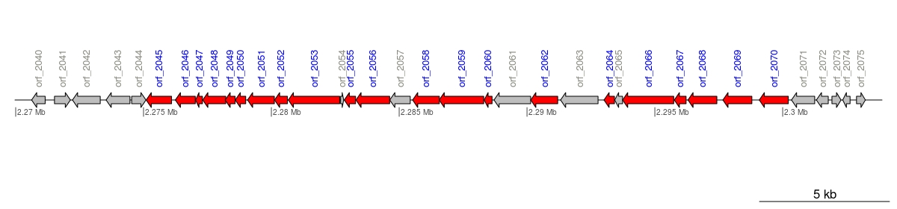
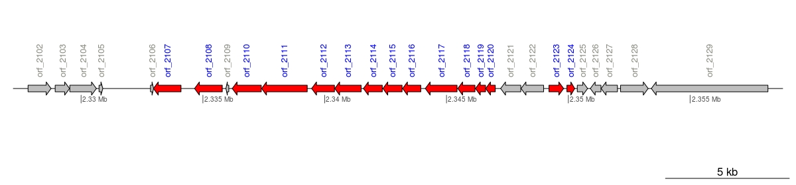

The NF-T3SS, or injectisome, is an extremely complex machine that confers Gram-negative bacteria the capacity of delivering effector proteins into the cytoplasma of eukaryotic hosts (Büttner, 2012). NF-T3SS evolved from flagella (Abby and Rocha, 2012), which is a T3SS itself, and its involvement in both animal and plant pathogenesis has been widespread reported (Coburn, Sekirov and Finlay, 2012).
T3SS cluster 1 (5 genes)
| T3SS_cluster_type | Num_components | Core_components_in_cluster | Total_core_comp_Flagellum | Perc_core |
|---|---|---|---|---|
| Flagellar | 5 | 1 | 11 (Abby and Rocha, 2012) | 9.09% |
1 of 11 core components
Genomic context
| gene | start | end | input_seq | strand | length | artif_coord | dist_next | SS_type | component | method | E_val | Blast_DNA | Blast_AA |
|---|---|---|---|---|---|---|---|---|---|---|---|---|---|
| orf_1985 | 2211996 | 2212664 | SEQ_1 | -1 | 222 | 2211996..2212664 | -4 | none | none | none | none | NCBI_BLASTN | NCBI_BLASTP |
| orf_1986 | 2212661 | 2213284 | SEQ_1 | -1 | 207 | 2212661..2213284 | 373 | none | none | none | none | NCBI_BLASTN | NCBI_BLASTP |
| orf_1987 | 2213658 | 2214137 | SEQ_1 | -1 | 159 | 2213658..2214137 | -1 | none | none | none | none | NCBI_BLASTN | NCBI_BLASTP |
| orf_1988 | 2214137 | 2214631 | SEQ_1 | -1 | 164 | 2214137..2214631 | 38 | none | none | none | none | NCBI_BLASTN | NCBI_BLASTP |
| orf_1989 | 2214670 | 2215686 | SEQ_1 | -1 | 338 | 2214670..2215686 | -8 | none | none | none | none | NCBI_BLASTN | NCBI_BLASTP |
| orf_1991 | 2216465 | 2217598 | SEQ_1 | -1 | 377 | 2216465..2217598 | 26 | none | none | none | none | NCBI_BLASTN | NCBI_BLASTP |
| orf_1992 | 2217625 | 2219982 | SEQ_1 | -1 | 785 | 2217625..2219982 | 9 | none | none | none | none | NCBI_BLASTN | NCBI_BLASTP |
| orf_1993 | 2219992 | 2220711 | SEQ_1 | -1 | 239 | 2219992..2220711 | 55 | none | none | none | none | NCBI_BLASTN | NCBI_BLASTP |
| orf_1994 | 2220767 | 2221147 | SEQ_1 | -1 | 126 | 2220767..2221147 | 33 | none | none | none | none | NCBI_BLASTN | NCBI_BLASTP |
| orf_1999 | 2226756 | 2227223 | SEQ_1 | -1 | 155 | 2226756..2227223 | -2 | none | none | none | none | NCBI_BLASTN | NCBI_BLASTP |
| orf_2000 | 2227222 | 2227338 | SEQ_1 | 1 | 38 | 2227222..2227338 | 82 | none | none | none | none | NCBI_BLASTN | NCBI_BLASTP |
| orf_2001 | 2227421 | 2230192 | SEQ_1 | 1 | 923 | 2227421..2230192 | -4 | none | none | none | none | NCBI_BLASTN | NCBI_BLASTP |
| orf_2002 | 2230189 | 2230785 | SEQ_1 | -1 | 198 | 2230189..2230785 | 154 | none | none | none | none | NCBI_BLASTN | NCBI_BLASTP |
| orf_2003 | 2230940 | 2232718 | SEQ_1 | 1 | 592 | 2230940..2232718 | none | none | none | none | NCBI_BLASTN | NCBI_BLASTP |
T3SS cluster 2 (21 genes)
| T3SS_cluster_type | Num_components | Core_components_in_cluster | Total_core_comp_Flagellum | Perc_core |
|---|---|---|---|---|
| Flagellar | 21 | 8 | 11 (Abby and Rocha, 2012) | 72.7% |
8 of 11 core components
Genomic context
| gene | start | end | input_seq | strand | length | artif_coord | dist_next | SS_type | component | method | E_val | Blast_DNA | Blast_AA |
|---|---|---|---|---|---|---|---|---|---|---|---|---|---|
| orf_2040 | 2270623 | 2271153 | SEQ_1 | -1 | 176 | 2270623..2271153 | 363 | none | none | none | none | NCBI_BLASTN | NCBI_BLASTP |
| orf_2041 | 2271517 | 2272140 | SEQ_1 | 1 | 207 | 2271517..2272140 | 81 | none | none | none | none | NCBI_BLASTN | NCBI_BLASTP |
| orf_2042 | 2272222 | 2273307 | SEQ_1 | -1 | 361 | 2272222..2273307 | 229 | none | none | none | none | NCBI_BLASTN | NCBI_BLASTP |
| orf_2043 | 2273537 | 2274469 | SEQ_1 | -1 | 310 | 2273537..2274469 | 66 | none | none | none | none | NCBI_BLASTN | NCBI_BLASTP |
| orf_2044 | 2274536 | 2275096 | SEQ_1 | 1 | 186 | 2274536..2275096 | 7 | none | none | none | none | NCBI_BLASTN | NCBI_BLASTP |
| orf_2054 | 2282708 | 2282830 | SEQ_1 | 1 | 40 | 2282708..2282830 | 20 | none | none | none | none | NCBI_BLASTN | NCBI_BLASTP |
| orf_2057 | 2284632 | 2285432 | SEQ_1 | -1 | 266 | 2284632..2285432 | 92 | none | none | none | none | NCBI_BLASTN | NCBI_BLASTP |
| orf_2061 | 2288709 | 2290142 | SEQ_1 | -1 | 477 | 2288709..2290142 | 2 | none | none | none | none | NCBI_BLASTN | NCBI_BLASTP |
| orf_2063 | 2291312 | 2292778 | SEQ_1 | -1 | 488 | 2291312..2292778 | 231 | none | none | none | none | NCBI_BLASTN | NCBI_BLASTP |
| orf_2065 | 2293431 | 2293736 | SEQ_1 | -1 | 101 | 2293431..2293736 | 1 | none | none | none | none | NCBI_BLASTN | NCBI_BLASTP |
| orf_2071 | 2300344 | 2301252 | SEQ_1 | -1 | 302 | 2300344..2301252 | 65 | none | none | none | none | NCBI_BLASTN | NCBI_BLASTP |
| orf_2072 | 2301318 | 2301782 | SEQ_1 | -1 | 154 | 2301318..2301782 | 143 | none | none | none | none | NCBI_BLASTN | NCBI_BLASTP |
| orf_2073 | 2301926 | 2302282 | SEQ_1 | 1 | 118 | 2301926..2302282 | 66 | none | none | none | none | NCBI_BLASTN | NCBI_BLASTP |
| orf_2074 | 2302349 | 2302636 | SEQ_1 | -1 | 95 | 2302349..2302636 | 250 | none | none | none | none | NCBI_BLASTN | NCBI_BLASTP |
| orf_2075 | 2302887 | 2303234 | SEQ_1 | 1 | 115 | 2302887..2303234 | none | none | none | none | NCBI_BLASTN | NCBI_BLASTP |
T3SS cluster 3 (15 genes)
| T3SS_cluster_type | Num_components | Core_components_in_cluster | Total_core_comp_Flagellum | Perc_core |
|---|---|---|---|---|
| Flagellar | 15 | 2 | 11 (Abby and Rocha, 2012) | 18.2% |
2 of 11 core components
Genomic context
| gene | start | end | input_seq | strand | length | artif_coord | dist_next | SS_type | component | method | E_val | Blast_DNA | Blast_AA |
|---|---|---|---|---|---|---|---|---|---|---|---|---|---|
| orf_2102 | 2327823 | 2328767 | SEQ_1 | 1 | 314 | 2327823..2328767 | 168 | none | none | none | none | NCBI_BLASTN | NCBI_BLASTP |
| orf_2103 | 2328936 | 2329526 | SEQ_1 | 1 | 196 | 2328936..2329526 | 10 | none | none | none | none | NCBI_BLASTN | NCBI_BLASTP |
| orf_2104 | 2329537 | 2330628 | SEQ_1 | 1 | 363 | 2329537..2330628 | 108 | none | none | none | none | NCBI_BLASTN | NCBI_BLASTP |
| orf_2105 | 2330737 | 2330892 | SEQ_1 | 1 | 51 | 2330737..2330892 | 1955 | none | none | none | none | NCBI_BLASTN | NCBI_BLASTP |
| orf_2106 | 2332848 | 2332976 | SEQ_1 | 1 | 42 | 2332848..2332976 | -9 | none | none | none | none | NCBI_BLASTN | NCBI_BLASTP |
| orf_2109 | 2335944 | 2336063 | SEQ_1 | -1 | 39 | 2335944..2336063 | 139 | none | none | none | none | NCBI_BLASTN | NCBI_BLASTP |
| orf_2121 | 2347222 | 2348049 | SEQ_1 | -1 | 275 | 2347222..2348049 | 10 | none | none | none | none | NCBI_BLASTN | NCBI_BLASTP |
| orf_2122 | 2348060 | 2348986 | SEQ_1 | -1 | 308 | 2348060..2348986 | 218 | none | none | none | none | NCBI_BLASTN | NCBI_BLASTP |
| orf_2125 | 2350368 | 2350793 | SEQ_1 | 1 | 141 | 2350368..2350793 | 109 | none | none | none | none | NCBI_BLASTN | NCBI_BLASTP |
| orf_2126 | 2350903 | 2351340 | SEQ_1 | -1 | 145 | 2350903..2351340 | 7 | none | none | none | none | NCBI_BLASTN | NCBI_BLASTP |
| orf_2127 | 2351348 | 2352016 | SEQ_1 | -1 | 222 | 2351348..2352016 | 127 | none | none | none | none | NCBI_BLASTN | NCBI_BLASTP |
| orf_2128 | 2352144 | 2353277 | SEQ_1 | 1 | 377 | 2352144..2353277 | 129 | none | none | none | none | NCBI_BLASTN | NCBI_BLASTP |
| orf_2129 | 2353407 | 2358194 | SEQ_1 | -1 | 1595 | 2353407..2358194 | none | none | none | none | NCBI_BLASTN | NCBI_BLASTP |